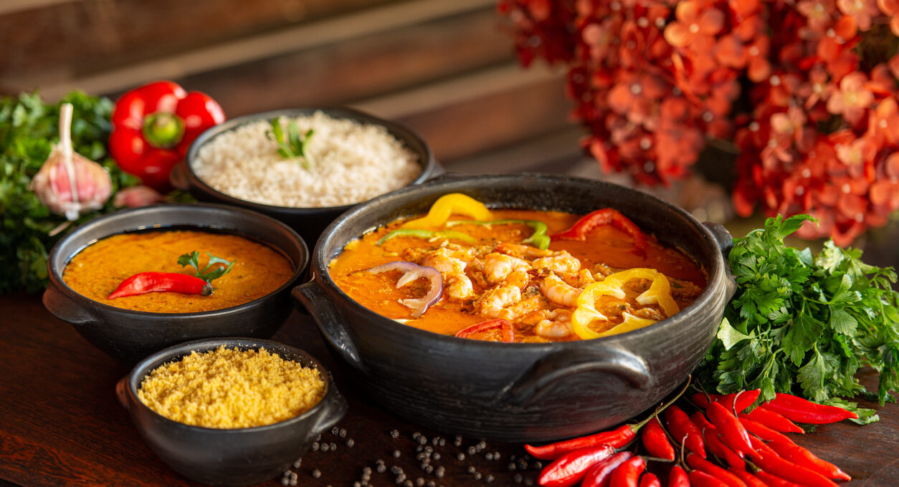
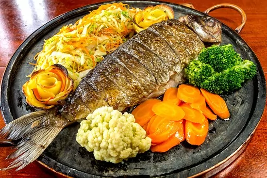
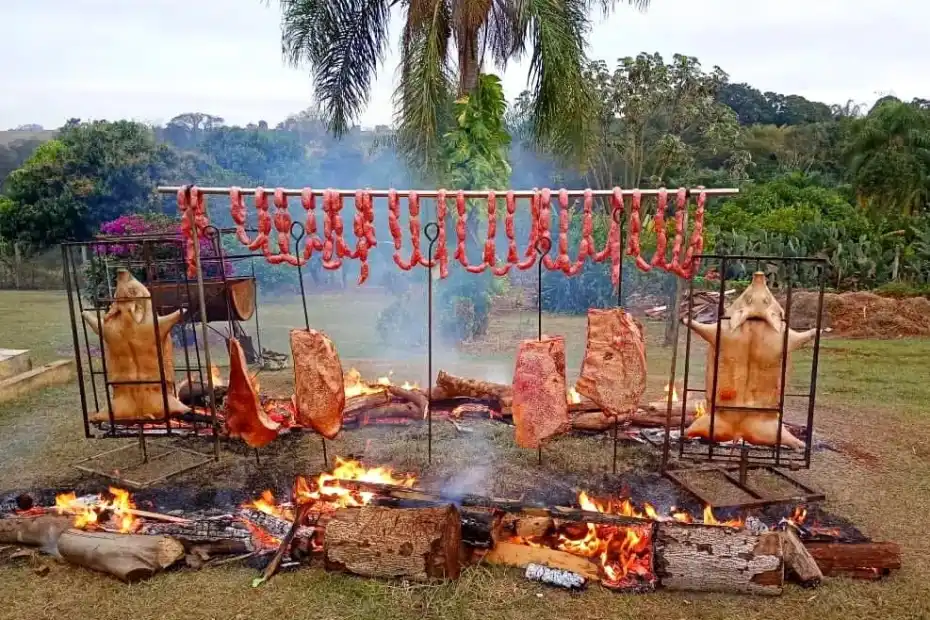

A comida baiana é uma explosão de sabores e influências culturais, resultado da fusão
entre as tradições indígenas, africanas e portuguesas. Rica em temperos como dendê,
coentro e pimenta, a culinária da Bahia se destaca por pratos icônicos como o acarajé, o
vatapá, o caruru e a moqueca. O leite de coco e os frutos do mar também são ingredientes
essenciais, conferindo um sabor único e marcante. Além do sabor irresistível, a comida
baiana carrega histórias e ancestralidade, sendo uma verdadeira expressão da identidade e
da alegria do povo baiano.
Brenda Ramos
Ler Mais

A comida do Mato Grosso do Sul reflete a diversidade cultural e as riquezas naturais da
região, combinando influências indígenas, paraguaias e pantaneiras. Pratos típicos como
a chipa, um tipo de pão de queijo mais firme, e a sopa paraguaia, que na verdade é um bolo
de milho salgado, são exemplos dessa mistura única. O sobá, de origem japonesa, também é
muito apreciado na região, especialmente em Campo Grande. O churrasco pantaneiro, feito com
carnes suculentas assadas lentamente, e o peixe na telha, preparado com espécies locais
como o pintado e o pacu, destacam o forte vínculo com o Pantanal. Essa culinária é um
convite para explorar sabores rústicos e autênticos, carregados de tradição e
hospitalidade sul-mato-grossense.
Brenda Ramos
Ler Mais

A comida do Rio Grande do Sul é marcada pela forte influência da cultura gaúcha, com
sabores robustos e pratos que valorizam a tradição e o convívio à mesa. O churrasco é
o grande símbolo da culinária gaúcha, preparado com cortes de carne bovina assados
lentamente no fogo de chão, acompanhados pelo tradicional chimarrão, uma erva-mate amarga
que representa hospitalidade e união. Além disso, o arroz carreteiro, feito com sobras de
carne e arroz temperado, e o entrevero, um prato que mistura diferentes tipos de carne
com legumes, são muito apreciados. A herança europeia também se faz presente em pratos
como o sagu de vinho com creme, sobremesa típica das colônias italianas. A culinária
gaúcha é uma celebração de sabores que carrega história, cultura e tradição em cada prato.
Brenda Ramos
Ler Mais